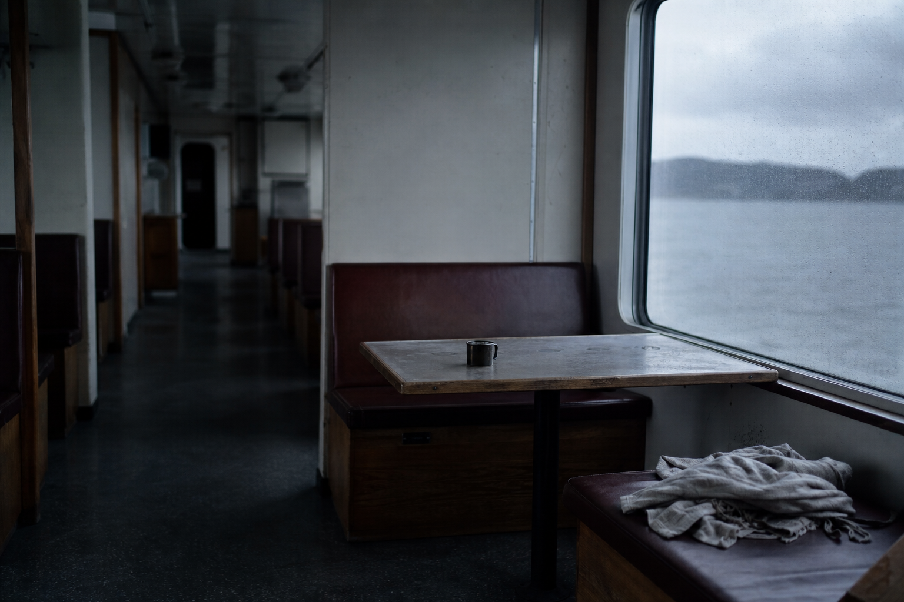

One cap, one wearer, four seasons of notes
Four Seasons In: What Held, And What Let Go
Free shipping in France, thirty days to send it back. Three caps binned in a year, then one that kept its shape. This page follows that one, season by season.
The 6:40 train, still dark outside. He lifts the cap, sets it back down, thumb along the front seam. Ordinary. Except he does it again four stops later, and again at the barrier, because the last one had stopped holding somewhere around the second autumn.
That is the difference this page is about. Not how a cap looks the day it arrives. What it does in season four, at the friction points, at the creases, on a head it has been sitting on since October.
One cut, made to fit, with a side-adjuster you set once. Everything after this is the wear log.
9 washes, all on the same cut. Free worldwide shipping.

Three Caps A Year, Or One That Keeps Its Shape
Ask men why they binned a cap and the answers land in the same place. 19% say it grated or squeezed. 13% say they simply got tired of it. Neither is a taste problem. Both are a build problem, and a build problem comes back every autumn.
This one is $29.99, down from $59.98, with free worldwide shipping and no minimum. Buy two, the third is free.
Now do the division yourself. One cap holds its shape across seasons, or three caps hold theirs for a few weeks each. We're not putting a number of winters on it. Wear it and count.
Season two, October
The Season Where A Cap Starts To Give Up
It never fails on a dry day. It fails in the rain, and then again every ten minutes after that.
The first rain is the test. A cheap shell soaks, sags, and dries into a shape that isn't quite the one it had. Nothing tears. It just goes slack.
Then the habit starts. You push it back into place at the platform. Again at the door. Again at your desk, without thinking. A cap you adjust ten times a day is a cap that has stopped holding, and you knew it before you admitted it.
That's a second-season failure, and it comes back on schedule: the first cold morning, the first proper autumn, the walk to the station in a wind that wasn't forecast. You don't throw it out that week. You throw it out the following spring, and buy the same problem again.
How it's built
The Shrinkage Already Happened, Before The Cloth Was Ever Cut
Raw denim stiffens, then shrinks, then goes slack. This cloth did all three before anyone drew a pattern on it.
Cut a cap from raw denim and you hand the buyer three seasons of trouble. Season one it's board-stiff. Season two it pulls in at the first proper wash. Season three it gives up and hangs loose. The cap didn't fail. The order of operations did.
Here the denim is washed as cloth, before the cut. The shrinkage is already spent. So the hand is soft from the first wear, not the fortieth, and the size doesn't move when it finally meets your sink.
One honest limit: the cut stops at its upper end. Above a 61 cm head, email us at help@ashcroft-flatcaps.com before you order rather than after.
- Washed first, cut secondThe fabric loses its shrinkage as cloth. What you receive is what stays.
- Soft from day oneNo breaking-in season. The hand is already lived-in when it arrives.
- Stable at the washThe size doesn't move at home. It settles onto you instead of resisting.
Season two, still the same setting
A Shell That Gives Way Where Your Head Says So
Set the side-adjuster once. From there the cap does the moving, not you.
A hard crown fights the head it sits on. Pressure lands on two or three points, the seam digs in, and you spend the day taking it off and putting it back on.
This shell is soft. It follows the shape of the skull instead of imposing one, and the line sits low, following your face rather than perching above it. Nothing to keep correcting through an autumn morning.
Sizing is a single gesture: one cut, one side-adjuster, set it once and it stays put. Impossible to get the size wrong. Above 61 cm of head circumference, write to us before ordering, the cut stops at its upper limit.
- Soft shellGives way where the head asks, holds everywhere else.
- Low lineSits low and follows your face, season after season.
- One adjustmentSide-adjuster set once, then forgotten.
100-Day Fit Guarantee: it sits right, or your money back
Construction, side by side
What Lets Go First, And Why It Always Lets Go There
A cheap cap doesn't fail at random. It fails at the lining, the dye and the sizing, in that order, every time.
Look at where the failures land. Glued lining lifts with heat and blisters across the forehead. Unstable dye moves onto the skin. Sizes invented on a marketplace spec sheet fit no head in particular.
This cap answers those three points with three build decisions, not three claims. The denim is washed. The cut is one cut, held by a side-adjuster you set once. The trim is tan suede.
The rule the seasons write
One cut, made to fit. Set it once and it stays put, on any head. What gives way is the shell, where your head says so, and never the construction.
| The Washed Denim Collection | Alternative | |
|---|---|---|
| Lining | Sewn construction under a soft shell that gives way to the head | Glued lining that lifts with heat and blisters on the forehead |
| Fabric | Washed denim, lived-in from the first wear | Unstable dye that transfers onto skin |
| Sizing | One cut with a side-adjuster: set it once, impossible to get the size wrong | Invented sizes that fit no head in particular |
| Trim | Tan suede trim | Whatever costs least that season |
Nine washes, one cut
Nine Washes. The Same Cut Underneath Every One.
The colour changes. What sits on your head does not.
The case we've been following is one cap. But there are nine washes of it, and the man who wears his light blue through four winters usually comes back for a second, not a replacement.
Start at the everyday light blue if you want the one that disappears under a coat collar. End at the burgundy that isn't afraid of colour. Between them sit the Mariner, the Blackthorn, the Cotswold, the Chestnut, the Claret, the Sherwood, the Admiral, the Onyx.
What doesn't change
- The cut. One cut across all nine. The shell that gives way on the Onyx is the shell that gives way on the Claret.
- The trim. Tan suede on every one, so each wash ages against the same fixed point.
- The adjuster. Set it once on the first. The second arrives already knowing your head.
The collection keeps growing. New washes are added to the same cut, never a new cut.
Season four, still counting
Creases, Friction Points, And The Patina That Follows
The marks that appear on this cap are the ones we designed it to take.
By the fourth autumn, the same cap no longer looks new. It marks at the folds, where the crown breaks the same way every time you put it on. It lightens at the friction points, the brim edge and the spot your thumb finds each morning.
That is denim doing what denim does. A cheap cap loses its dye evenly and goes flat everywhere at once. Washed denim loses it where you actually touch it, so the wear maps back to the way you wear it.
The patina is the point. This cap is built to age like a jean, not like an accessory: it takes your shape and keeps it, season after season, instead of resisting you until it lets go.
- CreasesThe folds set where the crown bends under your hand. The same bend, every morning, becomes the cap's own line.
- Friction pointsColour lifts first at the edges you handle most. That lightening is the record of four winters, not a fault in the wash.
- PatinaWashed denim already looks lived-in on day one. What follows is depth, and it only belongs to the head that wore it.
Count The Seasons Yourself
You know what the last three cost you. Not the price on each one, the total, plus the autumn morning each one let go.
Here is what this one costs. We'll stop there.
The numbers, as they stand
- $29.99 instead of $59.98. Buy 2 flat caps, get 1 free. Free worldwide shipping, no minimum.
- 19% of buyers have thrown out a cap because it grated or squeezed. 13% because they simply grew tired of it.
- 30,000+ satisfied customers.
Divide by the seasons you intend to wear it. That sum is yours to do, not ours.
Season five and beyond
What Keeps It Going, Season After Season
Five minutes of care, twice a year. That's the whole protocol.
The denim was washed before it was cut, so nothing dramatic happens the first time you wash it at home. Cold water, mild soap, by hand. Press the water out against the side of the basin. Never wring it.
Then dry it flat, on a form that holds the crown open, away from any radiator. Heat is what does the damage.
The tumble dryer is the one thing that ends it. It shrinks and twists the shell in a way no amount of wear puts back, and a shell that has lost its shape never gives way where your head says so again. Everything else on this cap is built to take years. That machine takes ten minutes.
- By hand, coldMild soap, cold water. The shrinkage already happened before the cut, so the size holds.
- Press, don't wringSqueeze the water out flat. Twisting sets creases where you never asked for them.
- Flat, on a formLet the crown keep its volume while it dries. Never on a radiator, never in direct heat.
- Never the dryerThe one irreversible mistake. The shell deforms and stays deformed.
Free worldwide shipping, no minimum purchase
Straight answers
"It Grated At The Seam. It Went Out Of Shape. It Was Cheaper."
Three sentences we hear from men who have already replaced a cap this year. Here is what we say back.
Nineteen percent of buyers told us they binned a cap because it grated or squeezed. That is the objection to answer first, so we answer it with a limit rather than a promise.
The shrinkage happened before the cut, so the size does not move at the first home wash. But the cut stops at its top end. Above 61 cm around the head, write to us before you order, and we will tell you honestly whether it will sit right.
And what it is not: this is not a sports cap. It does not cover the forehead like a long peak, and it will not hold on a bike at speed. If that is what you need, this is the wrong cap.
"It grated at the seam."
The shell gives way where your head says so, and the side-adjuster is set once and stays put. Nothing to re-tighten every ten minutes.
"It went out of shape."
Denim marks at the creases and fades at the friction points. That is patina, not collapse. What kills a shell for good is the tumble dryer.
"It was cheaper."
Count it in seasons, not in receipts. Three cheap caps thrown out in a year cost more than one you keep wearing.
"I still can't see the material."
Twenty-nine percent of online buyers say the same. Try it outside, not just in front of a mirror. A size exchange is handled as a priority.
100-Day Fit Guarantee
A Hundred Days To See How It Settles
It sits right, or your money back.
A hundred days is not a returns window. It is a season of wear: set the side-adjuster once, put it on every morning, take it outside rather than standing in front of a mirror. That is long enough to know whether a cap gives way where your head says so, or quietly starts pushing back.
If it never settles, you send it back and get your money. No condition about the box, no argument about how much you wore it.
- Free worldwide shipping, no minimum purchase
- Secure payments, encrypted, card details never stored
- Support 24/7, or write to help@ashcroft-flatcaps.com
One note we would rather give you now than after a second return: the cut stops at the top of its range. Above 61 cm, write to us before you order.
100 days to judge. It sits right, or your money back.
Practical questions
The Questions That Come Back Every Autumn
Everything left to settle before the first cold morning.
These are the ones we get every year, when the mornings turn and the cap comes back out of the drawer.
Short answers below. If yours isn't here, email help@ashcroft-flatcaps.com. We answer around the clock, seven days a week.
How often do I adjust it?
Once. Set the side-adjuster the first day and leave it. It holds from there, season after season.
Can I try it on outside?
Yes, and you should. A mirror tells you nothing about how a cap sits after twenty minutes on a cold platform. Wear it out, then decide.
What if I need a different size?
Size exchanges are the most common request and we handle them first. One note of honesty: the cut stops at its upper limit. Above 61 cm, write to us before you order.
What should I never do to the denim?
Tumble dryer, bleach, hot machine wash. The dryer is what warps the shell for good, and that damage doesn't come back.
Set it once
Let It Take Your Shape
One cut, a side-adjuster, and the seasons do the rest.
Nothing left to decide. The denim was washed before it was cut, so the shell starts soft and gives way where your head says so instead of pushing back. Set the side-adjuster once. It stays put.
From there it only settles: creases at the fold, colour easing at the friction points, a wash that reads more like yours each season.
At $29.99 instead of $59.98, buy 2 and get 1 free, free worldwide shipping, no minimum. A hundred days to see how it sits. It sits right, or your money back.
9 washes in stock - 100-Day Fit Guarantee - free worldwide shipping